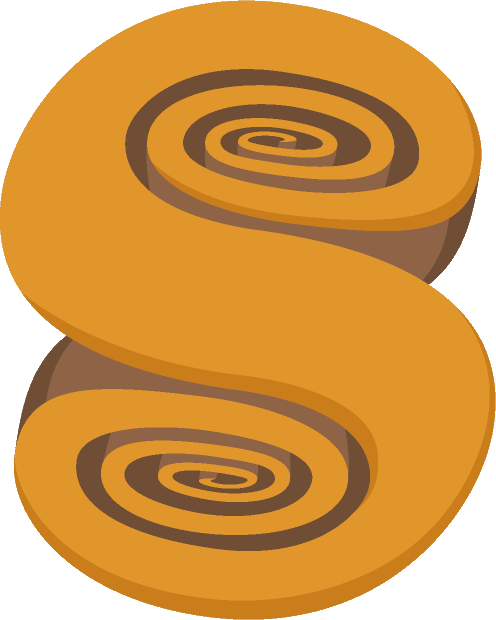
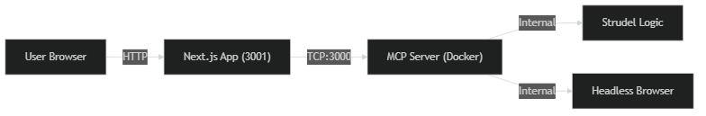
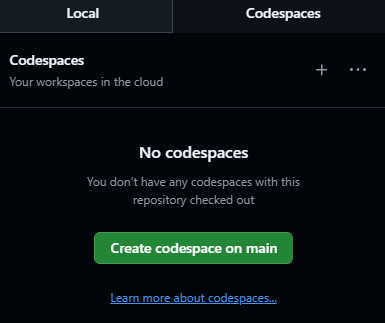
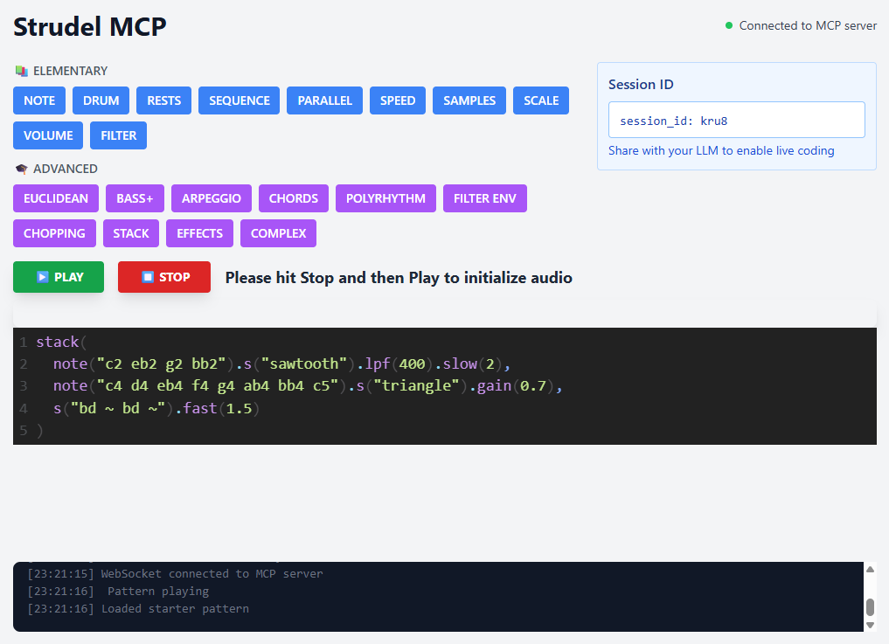
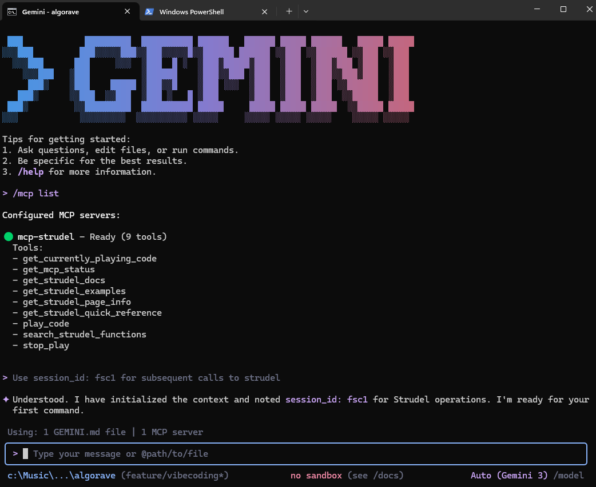

A 1-hour workshop exploring how to create music with code using Strudel.
Strudel: https://strudel.cc (install the PWA for best performance)
Site Gallery / Tutorial: https://strudel.patternclub.org/workshop/site-gallery
More Examples!: https://github.com/alienmind/algorave/tree/main/examples
This presentation: https://alienmind.github.io/algorave/presentation.html#/algorave-strudel-workshop
Algorithm + Rave = Algorave
I’m building on a WIP app application that integrates an example KB + LLM+MCP for “vibe” music coding. https://github.com/alienmind/algorave

Unfortunately not ready yet! - *** Stay tuned for the next workshop! ***
PLAN FOR TODAY: real livecoding + some vibe coding (alternative implementation)
Follow along here: http://strudel.patternclub.org/workshop/site-gallery
So you want to “vibecode” some Strudel? Let’s start by setting up an SSE enabled MCP server
Skip next slides: if you want to reuse my setup by using a GitHub codespace / devcontainer

Open your terminal and run:
Add the server to your configuration (~/.gemini/settings.json)Open up side by side:


Remember to prepend your LLM with this first prompt: “Use session_id: xxxx for Strudel operations” so it can reuse your MCP server window.
Try this prompt: Try “Write an amazing house track using Strudel”.
Remember - ⚡ENERGY: YES! ✨QUALITY: NO! - you’re not looking for a perfect polished track, but something that feels good to you :)
Raise your hand if you wanna show what you’ve made!
Please see REFERENCES.md for a complete list of links and resources used in this workshop.